DSEIGN ADVANTAGE
Exterior
Low profile
The low-key and minimalist design can maximize the integration of the building into the surrounding environment, so that the building can beUer play its role as a "service provider". At the same time, abandoning the exaggerated and unnecessary decoration can also reduce the cost and further enhance the market competitiveness.
Beautiful landscape/优美的景观
A large number of window holes in the building facade can bring the beautiful scenery out of the room to achieve the harmony and unity of indoor and outdoor space. The change of opening windows also enriches the space experience of the building, and can increase the enjoyment of life for the users. In addition, the existence of the inner courtyard not only rovides a good light source for the interior, but also rovides help for ventilation and ventilation. It also eliminates the sense of obstruction in the indoor space.
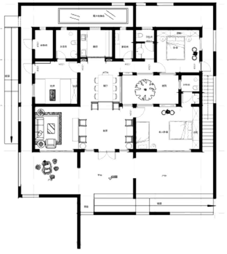
Interior
The function is complete. In type, the building has a garage, living room, dining room, toilet, kitchen, home office, equipment room and three different bedrooms. In quantity, the size of each room is very spacious. In addition, almost every room is equipped with a toilet.
User friendly design. Our main target is retired or retiring old people, so barrier free design is very necessary. For example, a ramp is installed at the entrance of the building to facilitate wheelchair access. The size of the bathroom should meet the rotation radius of the wheelchair and so on.
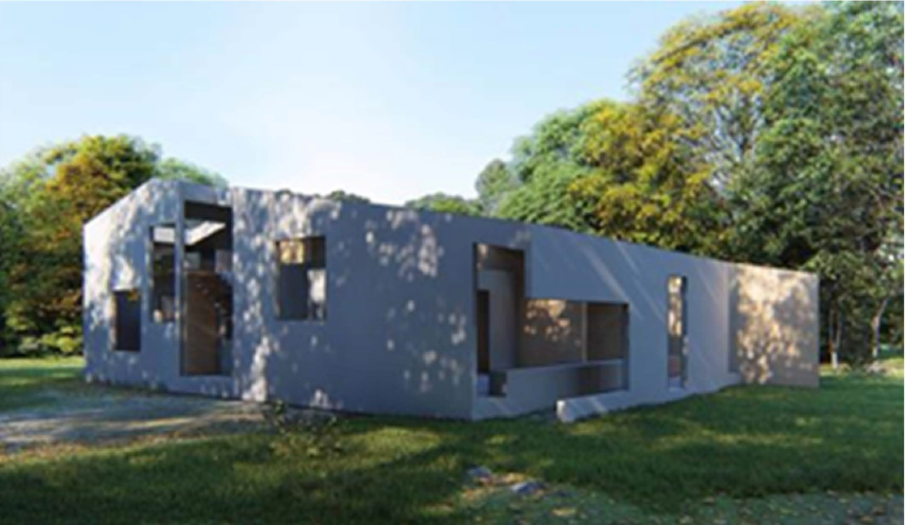
EQUIPMENT AND MATERIAL
Material
Composite Light-weight building systeml
High pressure and high strength plasterboard is used as permanent template for construction of concrete (replacing steel formwork and plastering), and the inner wall is masonry of high pressure and high strength gypsum hollow block. The insulation layer of the structure has good durability and high fire resistance; the building insulation and structure have the same life span.
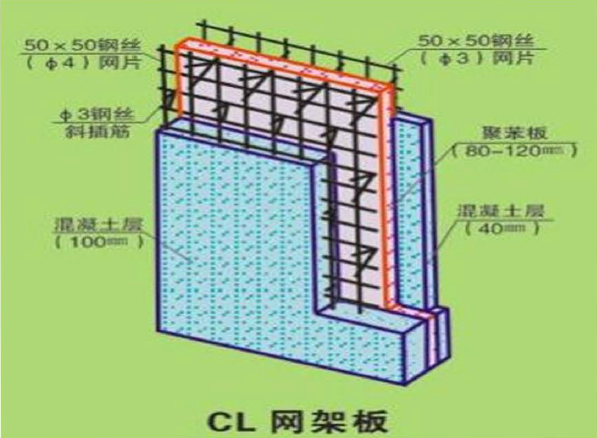
Three glass and two cavity energy saving glass doors and windows/三玻两瞌节能玻璃门窗
Three glass two cavity energy-saving glass doors and windows in noise, heat preservation and so on, than other kinds of glass doors and windows have more outstanding performance. And the cost is low and the weight is light.
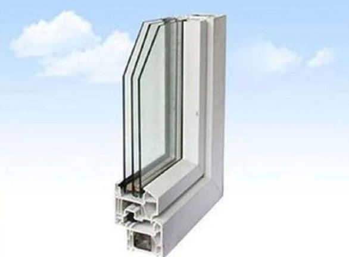
Equipment
The central air-conditioning has the characteristics of high degree of uniformity and comfort, saving space, beautiful appearance, high energy consumption ratio and energy saving.
Smart home is based on the housing platform, using the integrated wiring technology, network communication technology, security prevention technology, automatic control technology, audio and video technology to integrate home life related facilities, build efficient residential facilities and family schedule management system, improve home security, convenience, comfort, art To achieve environmental protection and energy conservation.
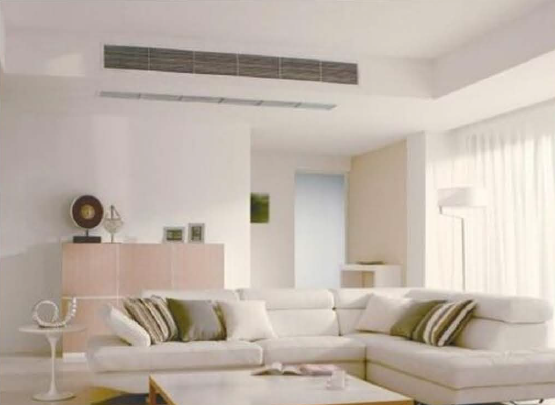
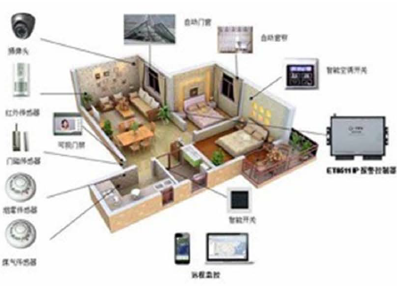
Market appeal
Livability
Exterior
We built a semi outdoor grey space by adding a box with holes to the outside of the building. Such a gray space can encourage outdoor activities. There are almost 300 days of sunshine in a year, which is very important for outdoor experience. AII these shady places encourage residents to spend more time outdoors. The most important thing is that our target customers can directly touch fresh air and natural elements, and have a sense of shelter and safety indoors. When entertaining guests, openness helps indoor and outdoor entertainment.
Interior
Lighting design:We make full use of natural light and have natural lighting in every corner of the room. The box outside the building is cleverly open at the top, providing ample vertical lighting for all space that requires sufficient sunlight, such as the elderly bedroom and the living room.
Many important physical functions depend on its sleep wakefulness cycle, hormone release and temperature. With natural and healthy rhythm, home design can prevent many diseases. Our design is trying to reduce obesity, diabetes, depression and other seasonal affective disorders. It is often found that these are stirred up by an abnormal rhythm.
Space
The setting up of several courtyards has strengthened the lighting and communication. The location of the courtyard is combined with the location of the bedroom to provide vertical lighting for the bedroom.
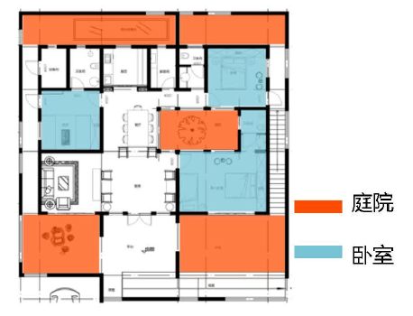
Intelligent House System
The smart home control system based on mobile devices and wearable devices is implemented. The latest smart home 2 system is adopted in the scheme. According to the analysis results of big data, smart home system can intelligently regulate the indoor environment and make people comfortable in the room. Its safety system is very suitable for the use of the elderly.
(1) Comfort
"Personnel safety": the indoor safety of the elderly and children is guaranteed, and the family property is not infringed.
"System security": smart home energy management system operates in a healthy and orderly way, and information is physically integrated and safe.
"Privacy security": smart home system has its own information security defense mode to eliminate privacy leakage caused by data collection, processing and storage of the system.
(2) Energy Saving
The smart home system can monitor the energy consumption in real time, automatically calculate the reasonable energy ratio, optimize the operation scheme of the system, carry out the optimal scheduling of energy and realize the maximum energy utilization efficiency.
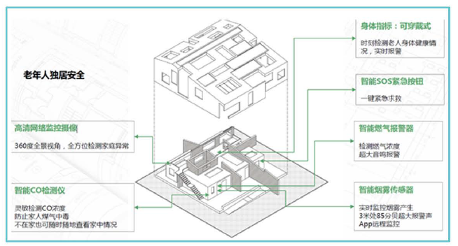
MARKET POTENTIAL
Buildability
Rural village design has begun to change, and it is suggested that this is linked to the changes to administrative hierarchies and policies, which have released the villages and their occupants from the previous restrictions. It is therefore a very opportune to build homes in rural areas. Much research, thought and consideration about traditional Chinese rural housing was put into designing the turtle home, so it is without problem or delay that a contractor is able to construct our home as we envisioned.
All the house' s materials and equipment are commercially available, such that the house can be immediately built where desired. The drawings and construction specifications provided sufficient quality and detail that enabled our contracting company to both generate an accurate, detailed construction cost estimate and to pre-construct the building as our design team intended it to be built.
Highly Recommended and Competitive Gypsum Building Solutions
Due to its adaptability, and ease of attaining and using , gypsum building systems are highly recommended as very competitive as it acts as an efficient solution associated with buildings that have low energy consumption.
In the Turtle home our outer walls and inner wall are installed with high strength high pressure plasterboard and gypsum blocks, which replace the old and tired way of using steel framework. This application is based on a plug and socket technique without plaster and girdles, thus economizing assembly costs and cutting construction time.
There are many other advantages to using this material such as; it is non-flammable, sound absorbing, bio-degradable, possesses high mechanical strength and thermal mass, has high water and moisture resistance, , and is manufactured by an environmentally friendly process Gypsum blocks are the new and preferred choice of engineers, architects and contractors alike.
Windows
"As you have seen the Turtle home is overflowing with an abundance of windows.
Triple pane windows are used in the construction of our home as they are an exciting step up from double glazed windows, having 3 panes of glass and 2 spacers instead of one. Though they are much heavier and slightly more expensive than double panes windows their popularity has come from the great difference in performance. With triple pane windows there is a 20-30% improvement in energy rating. Also the spacers in 3 pane windows are made differently than the warm edges spaces used in the average pane window. They use a superior quality silicone that is resistant to UV light oxidation and offers great argon gas retention for higher energy efficiency. Also with having 3 pane windows there is a significant reduction in outdoor noise pollution. Triple pane windows are available everywhere and are installed just the same.
Target Clients
Our Target population is the retired and retiring urban wage earners. The Turtle Home is multifunctional and brings a modern twist to traditional Chinese rural homes. The design provides amenities to meet the needs for all ages. For many older couples, the leisurely and pastoral life is more appealing than the noisy and fast paced city life.
Urbanization in China is happening very quickly. For the elderly who have worked in the city for several decades and are about to retire, we take an excerpt from a famous traditional poem that describes "Collecting chrysanthemums and admiring the Nanshan Mountains" being the dream that many Chinese people hope to achieve.
Income of Target Clients
In 2016, the per capita GDP of Shandong Province was 68,770 yuan, equivalent to 11 ,000 US dollars. In 2017, the average wage of employees on the job is 64,000 (S$10,OOO), and the annual household income is about 20,000 US dollars.
Images of Clients
1. Uncle Wan has owned and ran a small business for over 20 years in Dezhou. He has saved up some money and would like to purchase a home, but housing prices in the city are too high and he is no longer comfortable with
2. Xiao Li works in Jinan. A few years ago, he had already bought a house in the city and now wanted to provide a beUer living condition for his parents in the countryside.
3. Aunt Liu' s homrtown is Dezhou. Her house in the city is going to leave to his son. She is about to retire and wants to return hometown to enjoy a stress-free life.
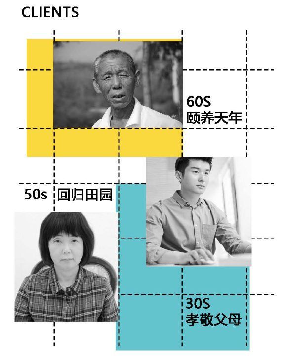
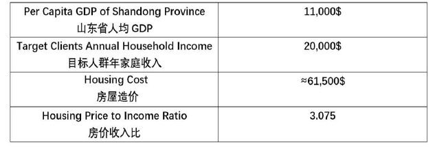
MARKET POTENTIAL
Cost Estimate
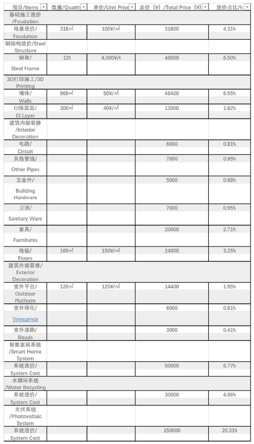
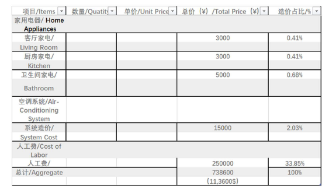